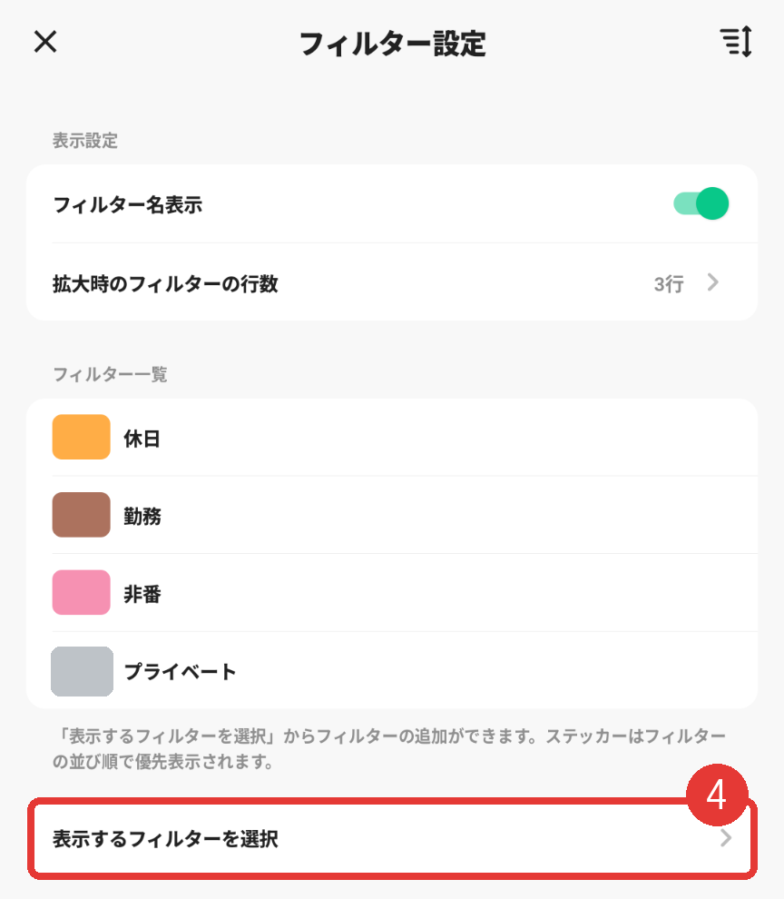
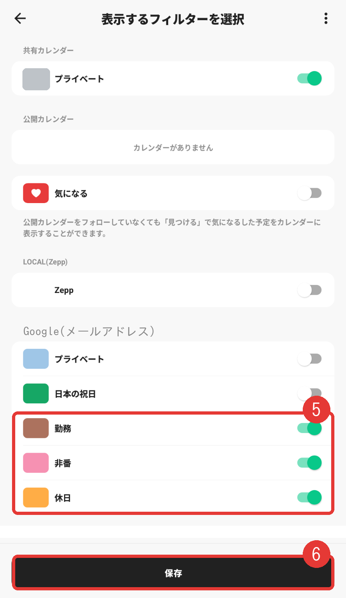
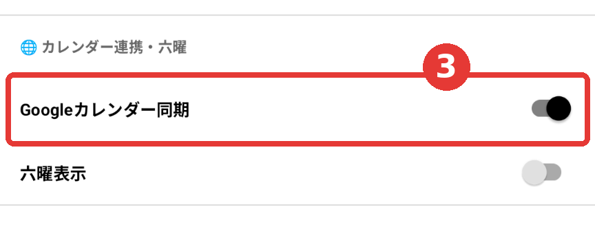

Googleカレンダーの勤務を、
ほかのアプリで見る
shiftflowは、勤務の予定をGoogleカレンダーに入れます。ほかのアプリは、それを「読み込んで」表示します。
| アプリ | iPhone | Android |
|---|
| TimeTree | iPhone標準カレンダー経由 | 端末のカレンダー経由 |
| Lifebear | iPhone標準カレンダー経由 | Googleカレンダー経由 |
| ジョルテ | iPhone標準カレンダー経由 | Googleカレンダーを追加 |
Yahoo!
カレンダー | LINEカレンダーに切り替え中(10ページ) |
iPhoneは、最初に「本体設定」が必要です。2〜3ページ目の本体設定を先に済ませてください。Androidは、端末にGoogleアカウントが入っていれば、アプリ側の設定だけです。
先に、設定画面で「勤務を時間つきの予定で登録する」が必要かも確認します。TimeTreeなどで見る人向けの設定です。
iPhoneだけ: 本体設定 ①
Googleアカウントを、iPhoneに追加します(最初の1回だけ)。
設定
Wi-Fi›
Bluetooth›
通知›
アプリ›
プライバシーとセキュリティ›
1
「設定」→「アプリ」
カレンダー
カレンダーアカウント›
デフォルトのカレンダー›
週の開始›
3
「カレンダーアカウント」
※画面はイメージ図です。アプリのバージョンで、見た目や名前が少し違います。赤い枠が押す場所です。
4次の画面で「アカウントを追加」→「Google」を選び、勤務用のカレンダーを作ったGoogleアカウントでログインします(次のページ)
古いiOSは、「設定」→「カレンダー」→「アカウント」から同じ操作です。
iPhoneだけ: 本体設定 ②
Googleのカレンダーをオンにして、アプリに許可を出します。
アカウントを追加
iCloud›
Microsoft Exchange›
Google›
Yahoo!›
その他›
4
「Google」を選んでログイン
カレンダー
TimeTree›
Lifebear›
ジョルテ›
6
アプリを「フルアクセス」に
※画面はイメージ図です。アプリのバージョンで、見た目や名前が少し違います。赤い枠が押す場所です。
6「設定」→「プライバシーとセキュリティ」→「カレンダー」を開き、使うアプリ(TimeTree・Lifebear・ジョルテ)を「フルアクセス」にします
「フルアクセス」の表示名はiOSの版で違うことがあります。出ないアプリは、カレンダーへのアクセスを許可にします。
TimeTree ①
iPhone・Android 共通。自分のホーム画面に表示します(共有相手には見えません)。
1(iPhoneは2〜3ページ目を先に済ませる。Androidは端末にGoogleアカウントが入っていること)
2TimeTreeに、端末のカレンダーへのアクセスを許可する
※左の2つはイメージ図です。次のページは、実際の画面です。
3左下のカレンダーのアイコンをタップ → 右上のトグルのアイコンをタップ
一覧に出ないとき: フィルターの画面で、外部カレンダーの「アクセスを許可」をタップします。
TimeTree ②
実際の画面です(個人情報は消しています)。

4. 「フィルター設定」の画面。「表示するフィルターを選択」をタップ

5. Googleの下の「勤務」「非番」「休日」をオンにして、6. 「保存」
知っておくこと
・Googleのアカウント名の下に、勤務用のカレンダーが並びます
・自動で更新されます
・共有カレンダーに取り込むと、コピーになり自動更新されません
・Web版では見られません
Lifebear(iPhone)
iPhone標準カレンダー経由で表示します。先にiPhoneの本体設定(2〜3ページ)を済ませます。
設定
カレンダー連携・六曜
iOSカレンダー同期オン
六曜表示オフ
2
「設定」で「iOSカレンダー同期」をオン
※画面はイメージ図です。アプリのバージョンで、見た目や名前が少し違います。赤い枠が押す場所です。
・iPhone側で、Lifebearのカレンダーへのアクセスを許可します
・低電力モードはオフにします
・チェックがないと、連携していても表示されません
注意: 予定を作るとき「Lifebearカレンダー」を選ぶと、Googleカレンダーには反映されません。反映が遅いときは、iPhoneの標準カレンダーを下に引いて更新します。
Lifebear(Android)
Googleカレンダー経由で表示します。
2先に、Lifebearの「同期」のボタンを押します。押さないと、設定に「Googleカレンダー同期」が出てきません
3Lifebearの「その他」タブ →「設定」を開き、「カレンダー連携・六曜」の中の「Googleカレンダー同期」をオン

実際のAndroidの設定画面です。赤い枠の「Googleカレンダー同期」をオンにします。
4表示したい勤務用のカレンダーにチェックを入れる(チェックがないと表示されません)
設定に出てこないとき: もう一度、「同期」のボタンを押してから、設定を開き直します。
ジョルテ
公式ヘルプの手順です(画面はイメージ図)。Androidは先に、端末の標準カレンダーにGoogleカレンダーが出ているか確認します。
iPhone 本体設定(2〜3ページ)のあと
追加
iOSカレンダー✓
Google(勤務)✓
Google(休日)○
3
「iOSカレンダー」にチェック→Googleのカレンダーにチェック
Android
サービス
Googleカレンダー›
Yahoo!カレンダー›
6
「Googleカレンダー」→アカウントにチェック
Yahoo!カレンダー
2026年9月28日から、「LINEカレンダー」に順次切り替わっています。
確認できたこと
・Yahoo!カレンダーアプリは、Googleカレンダーを読み込めます(公式ヘルプ)
・Googleカレンダーに入っている外部カレンダーの予定も、一緒に読み込まれます
・LINEカレンダーにも、Googleカレンダーとの連携があるとされています
・切り替え後、アプリ内の従来の予定は見るだけになるとの報道があります
手順は未確認です
公式ヘルプの画面を読み取れず、メニュー名を確認できませんでした。古い手順をのせないために、ここには書きません。
・iPhoneは、2ページ目の本体設定を先に済ませます
・アプリの設定から、Googleカレンダーの読み込みを探します
・切り替え時期のため、LINEカレンダーのヘルプで最新の手順を確認してください
見えないとき・出典
1Googleカレンダーのアプリで、勤務用が「表示(同期)」か
2iPhoneは、本体設定とアクセス許可を済ませたか
調べた先(公式ヘルプなど)
TimeTree: support.timetreeapp.com(「他のカレンダー(Googleカレンダーなど)を表示したい」)
Lifebear: support.lifebear.com(iOS・Androidの連携ヘルプ)
ジョルテ: support.jorte.net(iOS・Androidの「Googleカレンダー」)
Yahoo!カレンダー: support.yahoo-net.jp/SaaCalendar
iPhone: support.apple.com/ja-jp/guide/iphone(カレンダーアカウントの設定)
※アプリの画面名は、バージョンで変わります。Lifebearの公式ヘルプは本文を取得できず、検索結果の要約で補いました。